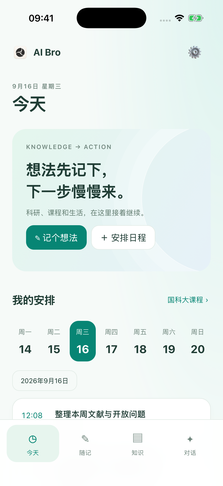
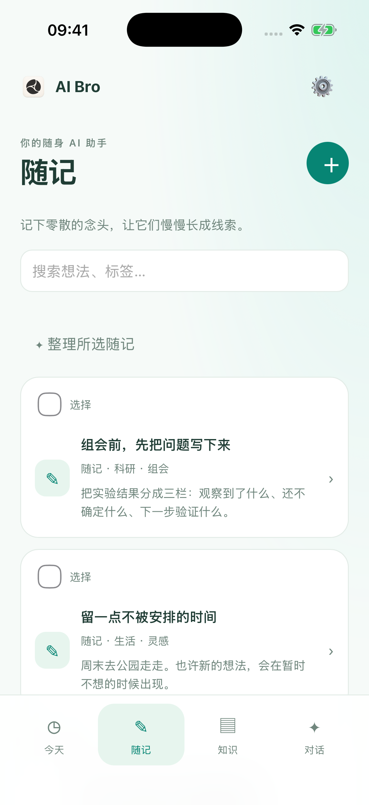
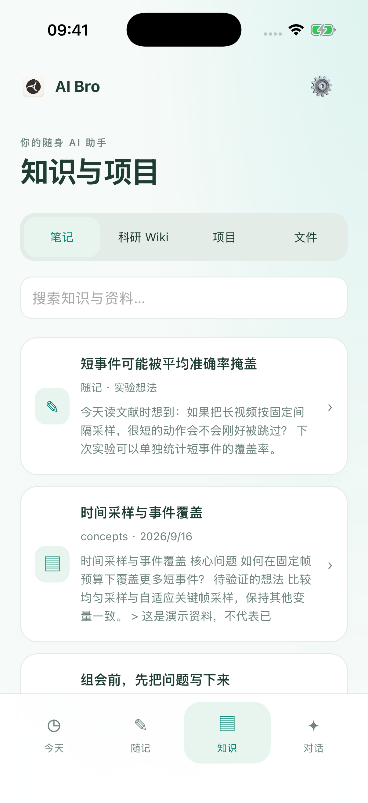
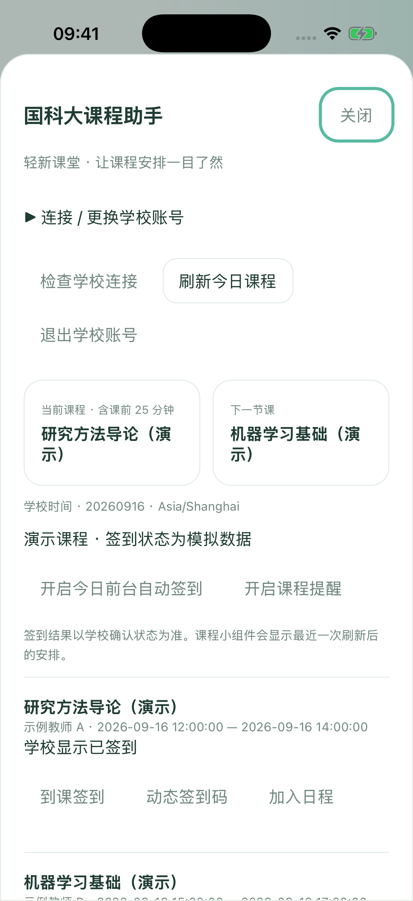

灵感先接住
随手记下碎片想法，附上链接和文件；再交给 AI 整理，让下一次讨论有据可循。
 AI Bro
AI Bro一份课件不止能总结，一篇论文不止能问答。把原始资料、自己的理解和待办连接起来，让 AI 在持续积累的知识里，陪你把事情推进。
持续对话 · 判断归属 · 执行动作从文件修改到并排阅读，从随记到日程，再回到项目进度与科研 Wiki。用一段真实操作，认识你的下一张工作台。
从资料到成果，滚动就能看到每一步怎样发生。每段演示都可以放大查看，也可以下载 GIF。
找回相关知识，看清执行过程，让每段对话都有可以继续的地方。
去上课的路上记下一个想法，组会前翻一篇笔记，睡前看看明天的安排。AI Bro 现在也在 iPhone 上，把科研、课程和生活带在身边。




iOS 模拟器实际界面 · 课程、教师与签到状态均为虚构演示数据
随手记下碎片想法，附上链接和文件；再交给 AI 整理，让下一次讨论有据可循。
搜索笔记、浏览科研 Wiki，在 Markdown 源码和预览间切换。AI 改写先看 Diff，再决定采纳。
国科大课程助手支持学校账号登录、课程查询、到课签到与课程二维码；课表还可以加入日程。
两端连接同一个自托管同步服务，把项目、笔记、任务与对话接起来；离线保存，连接后再同步。
同一套知识与行动结构，适应不同的工作方式。空间划分保持清晰，相关内容可以通过项目、来源和对话相互找到。
课件按课程与章节归档，分析集中到可编辑的 Markdown。对照原件复习，让考核要求、知识脉络和学习任务保持关联。
从论文链接或文件开始，整理方法、实验、局限与自己的启发。文献库连接原件、研究笔记和引用关系，支持去重与增量更新。
把出行、个人项目和琐事交给 AI。后续补充时间或改变安排时，更新原任务；也可以直接手动修改、移动和完成。
不必把所有事情交给同一个模型，也不必把所有资料交给同一个云服务。
本地保存，按需连接。使用模型时，相关内容会发送到你选择的提供商；开启同步时，支持的资料会发送到自己的服务器。模型密钥和本机目录授权不随工作区同步。
可以调节的工作区、能找回的内容，以及清楚可见的状态。让复杂工作流保持顺手。
AI Bro 0.7.1：原生工作台、可审阅文件、科研 Wiki 与持续项目。Mac 0.7.0 与 iOS 0.1.3，一起开始你的下一项工作。
适用于 Apple Silicon Mac，macOS 14 及以上。内置 Python 与 PDF 运行时，下载后无需单独安装。
前往 GitHub Releases ↗预览版尚未经过 Apple 公证。原生 Liquid Glass 需要 macOS 26。随手记录、阅读知识、查看日程与使用国科大课程助手，让 iPhone 成为你的随身工作伙伴。
下载 iOS 0.1.3 ↗iPhone / iPad · iOS 16+ · IPA 需自行签名安装查看源码、运行本地服务，或自行构建桌面 App。安装指南包含环境要求、构建与版本校验步骤。
打开构建指南 ↗源码构建需要 Xcode 26 / macOS 26 SDK、Node.js 与 Python。